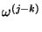
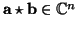
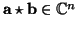
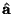
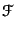
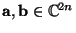

Next: Bibliography
Up: Appendices
Previous: Solutions for Questions 5 (page
Contents
Index
Solutions for Questions 6 (page ![[*]](file:/maths/faces/local/lib/latex2html-2K.1beta/icons/crossref.gif) ).
).
Solution 6.1:From the definition of the shift operator, we have

Solution 6.2:No solution offered.
Solution 6.3:No solution offered.
Solution 6.4:No solution offered.
Solution 6.5:We compute from the definition of
 =
=  (p).
(p).
 (0) (0) |
= a0 + a1 + a2 + ... + an - 1, |
|
| (1) |
= a0 + a1 + a2 + ... + an - 1 + ... + an - 1 , , |
|
| (2) |
= a0 + a1 + a2 + ... + an - 1 + ... + an - 1 , , |
|
| ... |
|
| (n - 1) |
= a0 + a1 + a2 + ... + an - 1 . . |
|
Thus the fixed set of points are the
nth roots of unity.
Solution 6.6:It is trivial to verify the factorisation
zn - 1 = (z - 1)(1 + z + z2 + ... + zn - 1).
The result follows, since we are given a zero of the left hand side
and z 1.
1.
It is enough to show that
 n = In,the
identity matrix; we have then explicitly produced an inverse. Since
the jth row of
is
n = In,the
identity matrix; we have then explicitly produced an inverse. Since
the jth row of
is
while the kth column of
n is
and since
= w-k, the entry in the
(j, k)th place of
the product is just
We now distinguish two cases. If j = k, this is just
(1 + 1 + ... + 1)/n = 1, while if jk, it is zero by the lemma,
since
 is an nth root of unity, but is not equal to
1. It follows that the product is the identity matrix as claimed.
Let
p(x) = a0 + a1x + a2x2 + ... an - 1xn - 1
be a polynomial of degree n - 1, which we identify with a point in
 using the map
p
using the map
p (a0, a1,..., an).
For
a and b in
, define
 by
(a0, a1,..., an).
For
a and b in
, define
 by
(
a b
b)
j =
 aj - kbk
aj - kbk,
A calculation shows that if
a and b are the coefficients of
polynomials p(x) and q(x) respectively, then p(x)q(x) has
coefficients
a b, at least when embedded in C2n to avoid
circular wrap-around.
b, at least when embedded in C2n to avoid
circular wrap-around.
Let
a = (a0, a1,..., an - 1) be a vector in
, and define
F in
by
 = n(a). Since the Fourier
matrix is unitary, we have
a = (), and so
this transformation, the Discrete Fourier Transform, is invertible.
In this context, we need the Convolution Theorem
Convolution Theorem:
Let
a and b be in
. Then

n(
a)
n(
b) =
n(
ab).
The convolution theorem suggest a different way of computing
ab at least when we embed
; as the inverse
transform of
2na . 2nb. In other words,
we first compute the Discrete Fourier Transforms of
a and b,
then compute the pointwise product
2na . 2nb, and finally compute the inverse Discrete Fourier Transform to
obtain
ab. It turns out by a careful arrangement of its
operations, the Fourier transform can be computed using only
O(n log n) operations. This is known as the Fast Fourier Transform.
Next: Bibliography
Up: Appendices
Previous: Solutions for Questions 5 (page
Contents
Index
Ian Craw
2001-04-27